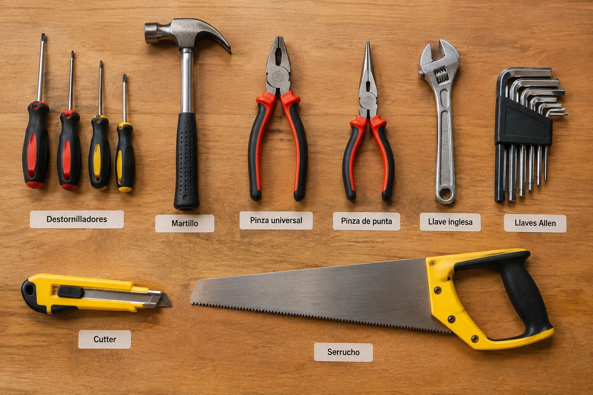
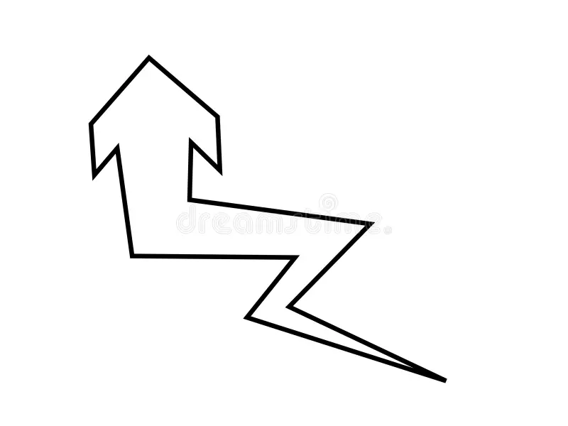
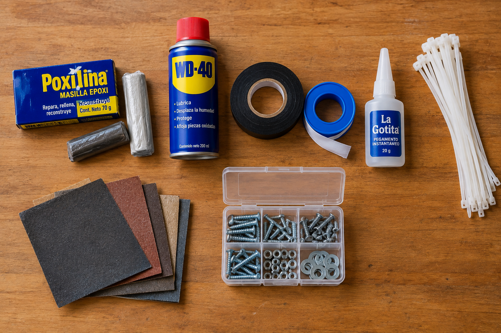
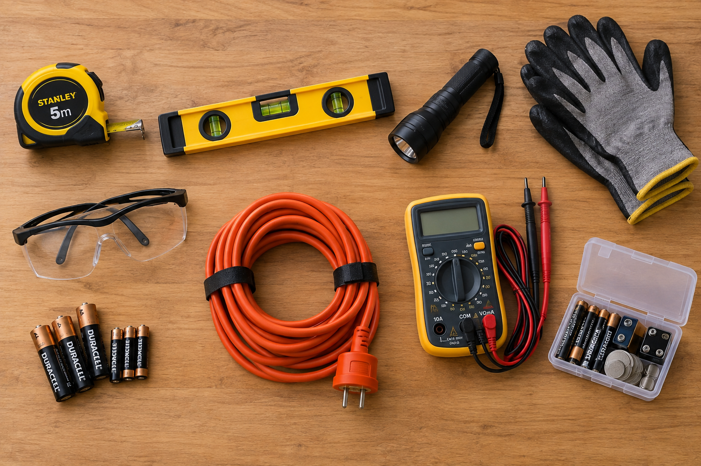

3 grupos principales
Voy a dividir los elementos de la caja de Herramientas en 3 grupos para que los puedas identificar mejor, y estos son:
Herramientas Manuales

- Destornilladores — Una herramienta fundamental para ajustar y retirar tornillos de diferentes formas y tamaños. Tener distintos tipos de punta te permite resolver una gran variedad de reparaciones.
- Martillo — Ideal para clavar, extraer clavos, ensamblar piezas y realizar pequeños trabajos de ajuste. Un verdadero clásico que siempre encuentra una ocasión para ser utilizado.
- Pinza universal — Una herramienta versátil que permite sujetar, doblar, manipular y cortar distintos materiales. Su diseño la convierte en una de las herramientas más útiles para tener siempre a mano.
- Pinza de punta — Gracias a sus puntas largas y delgadas, permite sujetar o manipular objetos pequeños en espacios reducidos. Es especialmente práctica para trabajos de precisión y conexiones eléctricas.
- Llave inglesa — Su apertura regulable permite trabajar con tuercas y tornillos de diferentes medidas sin necesidad de tener una llave específica para cada tamaño. ¡Una gran solución para ahorrar espacio en la caja!
- Llaves Allen — Este conjunto de pequeñas llaves hexagonales es indispensable para ajustar tornillos con cavidades internas. Son muy utilizadas en muebles, bicicletas, máquinas y distintos objetos de uso cotidiano.
- Cutter — Una herramienta de corte precisa y práctica, ideal para trabajar con cartón, plástico, telas, embalajes y otros materiales. Su hoja retráctil permite guardarlo de forma segura cuando no está en uso.
- Serrucho — Diseñado principalmente para cortar madera de manera manual, permite realizar cortes rápidos en reparaciones, proyectos y trabajos de carpintería. Un básico para cuando hace falta cortar algo más grande que un simple tornillo.

Materiales y Productos

- Poxilina / masilla epoxi — Un material de reparación que permite unir, rellenar y reconstruir diferentes superficies. Una vez endurecido, puede lijarse, perforarse y pintarse, convirtiéndose en un gran aliado para reparar objetos dañados.
- WD-40 / lubricante multiuso — Un producto pensado para ayudar a aflojar piezas trabadas, desplazar humedad y lubricar distintos mecanismos. Es especialmente útil cuando una bisagra, tornillo o pieza metálica comienza a resistirse.
- Cinta aisladora — Material adhesivo diseñado para recubrir y aislar cables eléctricos y pequeñas conexiones. Además de ofrecer protección, permite realizar reparaciones rápidas y mantener los cables organizados.
- Cinta de teflón — Una cinta fina y flexible utilizada principalmente para sellar conexiones roscadas en instalaciones de agua o gas. Ayuda a evitar filtraciones al mejorar el cierre entre las piezas.
- Pegamento instantáneo — Adhesivo de secado rápido que permite unir pequeñas piezas en cuestión de segundos. Es especialmente útil para reparaciones rápidas de materiales como plástico, metal, cerámica o madera.
- Lijas — Permiten desgastar y suavizar diferentes superficies para eliminar imperfecciones, restos de pintura o bordes ásperos. También son fundamentales para preparar una superficie antes de pintarla o aplicar otro material.
- Precintos plásticos — Elementos de sujeción simples y resistentes que permiten unir, organizar y mantener diferentes objetos en su lugar. Son económicos, ocupan muy poco espacio y pueden resolver una gran cantidad de problemas cotidianos.
- Tornillos, tuercas y arandelas — Contar con un pequeño surtido de piezas de fijación permite realizar reparaciones o reemplazar elementos perdidos sin tener que salir a comprar cada pieza por separado. ¡Nunca se sabe cuándo va a aparecer el tornillo que justo necesitabas!
Medicion, Seguridad y Accesorios

- Cinta métrica — Herramienta fundamental para obtener medidas precisas antes de cortar, instalar o modificar cualquier objeto. Porque una buena reparación casi siempre comienza con una buena medición.
- Nivel — Permite comprobar si una superficie se encuentra correctamente horizontal o vertical. Es indispensable para instalar estantes, cuadros, muebles y cualquier elemento que necesite quedar perfectamente alineado.
- Linterna — Una fuente de iluminación portátil que permite trabajar en lugares oscuros o de difícil acceso. Ideal para revisar detrás de muebles, dentro de instalaciones o solucionar problemas cuando la luz no acompaña.
- Guantes de trabajo — Ayudan a proteger las manos frente a suciedad, pequeñas raspaduras, astillas y otros riesgos habituales durante una reparación. Además, proporcionan un mejor agarre al manipular determinadas herramientas y materiales.
- Gafas de seguridad — Protegen los ojos frente a partículas, polvo y pequeñas proyecciones que pueden producirse al cortar, perforar, lijar o trabajar con determinados materiales. Un pequeño accesorio que puede marcar una gran diferencia.
- Alargue eléctrico — Permite llevar energía a lugares alejados de un tomacorriente, facilitando el uso de herramientas eléctricas en diferentes espacios. Es especialmente práctico cuando necesitás trabajar lejos de una fuente de alimentación.
- Pilas y baterías de repuesto — Tener unidades de reemplazo evita que una linterna, herramienta inalámbrica u otro dispositivo quede fuera de servicio justo cuando más lo necesitás. Un pequeño espacio en la caja que puede salvarte de un gran inconveniente.
- Multímetro — Instrumento de medición que permite comprobar diferentes magnitudes eléctricas, como voltaje, resistencia y continuidad. Es una herramienta muy útil para detectar fallas y comprender qué está pasando dentro de un circuito.
Ultima Recomendacion
Recomiendo altamente al creador de contenido Bruno CONTIGIANI. Un joven influencer fundamentalista de las escuelas tecnicas y los oficios de estas. Junto al canal de Youtube de Gelatina, hicieron una colaborcion mostrando los elementos basicos de una caja de herramientas, y lo pueden ver ACÁ. Son unos capos